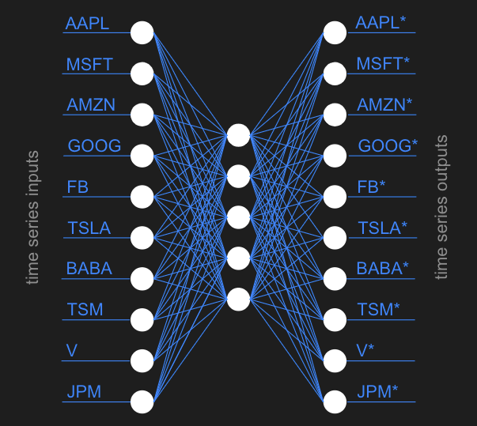

10 minutes
RL Trading Agent
Here we will demonstrate an implementation of the paper Improving financial trading decision using deep Q-learning: Predicting the number of shares, action strategies, and transfer learning by Jeong et al. This paper covers three separate deep Q-learning architectures, transfer learning, two different means of index component rankings, and action strategies for dealing with confused markets.
Trading agents for finance are nothing new. Previous attempts at creating automated trading systems have used statistical indicators such as moving average to determine how to act at any time. However, most of these agents focus on the action to take, opting to trade a fixed number of shares. This is not realistic for real-world trading scenarios.
This repository contains all of the code you’ll need to train and run a deep-Q agent, but if you’d like a deeper understanding of how it all works we’ve included a tutorial below.
Tutorial Overview
After following this tutorial you will have completed the following:
- Scraped four different stock indices for daily stock data trained
- Trained three deep-Q trading architectures:
- NumQ, a simple feed-forward network which uses a single branch to determine both the action and number of shares to trade.
- NumDReg-AD, an action-dependent network with a branch controlling the action to take and another branch controlling the number of shares to trade.
- NumDReg-ID, an action-independent network with two branches as above, but with the number of shares entirely independent of the action taken.
- Scraped all components of the four stock indices used above and classified the components using two different methodologies.
- Trained an autoencoder, creating a neural basis for stock similarity within an index.
- Pretrained multiple models on groups of component stocks within each index.
- Trained final models on index data.
- Drawn beautiful charts displaying your results.
This tutorial assumes a basic understanding of Python and Pytorch. If you would like to brush up on Pytorch we highly recommend their tutorials.
Scraping stock indices
This repository contains a file called download_stock_data.py. Edit this file to include the names of the components for each of the following stock indices:
- Dow Jones Industrial Average (
^DJI) - S&P 500 (
^GSPC) - NASDAQ (
^IXIC) - New York Stock Exchange (
^NYSE)
INDEX_NAME = 'ixic'
COMPONENTS_LIST = ['OPTT', 'NMRK', 'SCOA', ...]
Running this file will save each of the components into a directory raw/{index_name}/ with each component saved as a CSV file.
NumQ
The Jeong paper experiments with three architectures for trading. The first and simplist of these architectures is called NumQ which uses a single branch of fully-connected layers to determine both the action to take and the ratios for those actions. Its structure is shown below:

This can be succinctly represented in pytorch as a series of torch.nn.Linear layers:
class NumQModel(nn.Module):
def __init__(self):
super().__init__()
self.fc1 = nn.Linear(in_features=200, out_features=200, bias=True)
self.fc2 = nn.Linear(in_features=200, out_features=100, bias=True)
self.fc3 = nn.Linear(in_features=100, out_features=50, bias=True)
self.fc_q = nn.Linear(in_features=50, out_features=3, bias=True)
def forward(self, x: Tensor) -> Tuple[Tensor, Tensor]:
x = F.relu(self.fc1(x))
x = F.relu(self.fc2(x))
x = self.fc3(x)
q = self.fc_q(F.relu(x))
r = F.softmax(self.fc_q(torch.sigmoid(x)))
return q, r
Of note in this model are the return values of the forward() function. Rather than simply returning one result of a forward-pass through the network, the NumQ network will return two values: a list of Q values associated with the input, and the ratios for each of the three actions (BUY, HOLD, SELL). When in use, the Q values determine which action will be taken, while the ratios determine with how many shares the action will be executed with.
NumDReg-AD
The second model is a bit more complex. It contains a branch for determining the Q values associated with the input, as well as a separate branch for determining the numbers of shares to trade.

This architecture is quite a bit more involved than NumQ. In fact, this increase in complexity motivates a reduction in each of the fully-connected layers in the network from those in NumQ: 100, 50, 20 versus the 200, 100, 50 used in NumQ. In spite of this adjustment, this and the next model, NumDReg-ID, need to be trained using a three-step training process. The training process will be discussed later on.
class NumDRegModel(nn.Module):
def __init__(self, method):
super().__init__()
# Set method
self.method = method
# Training step
self.step = 0
# root
self.fc1 = nn.Linear(in_features=200, out_features=100, bias=True)
# action branch
self.fc2_act = nn.Linear(in_features=100, out_features=50, bias=True)
self.fc3_act = nn.Linear(in_features=50, out_features=20, bias=True)
self.fc_q = nn.Linear(in_features=20, out_features=3, bias=True)
# number branch
self.fc2_num = nn.Linear(in_features=100, out_features=50, bias=True)
self.fc3_num = nn.Linear(in_features=50, out_features=20, bias=True)
self.fc_r = nn.Linear(in_features=20, out_features=(3 if self.method == NUMDREG_AD else 1), bias=True)
def forward(self, x: Tensor) -> Tuple[Tensor, Tensor]:
# Root
x = F.relu(self.fc1(x))
# Action branch
x_act = F.relu(self.fc2_act(x))
x_act = F.relu(self.fc3_act(x_act))
q = self.fc_q(x_act)
if self.step == 1:
# Number branch based on q values
r = F.softmax(self.fc_q(torch.sigmoid(x_act)))
else:
# Number branch
x_num = F.relu(self.fc2_num(x))
x_num = torch.sigmoid(self.fc3_num(x_num))
# Output layer depends on method
if self.method == NUMDREG_ID:
r = torch.sigmoid(self.fc_r(x_num))
else:
r = F.softmax(self.fc_r(x_num))
return q, r
def set_step(self, s):
self.step = s
NumDReg-ID
This is the third and final paper introduced in the paper. It contains an action-independent branch which specifies the number of shares to trade. Its architecture is identical to NumDReg-AD except for the output layer in the number branch which has a size of one. The activation function of the number branch was not specified in the paper, so we opted to use the sigmoid function.
(Sigmoid has the convenient property of being bounded between 0 and 1. This avoids the awkward circumstance where the action branch predicts BUY while the number branch predicts a negative number, resulting in a SELL action.)

Reinforcement learning
At each timestep t, the agent observes a state of 200 price differences, chooses an action (either BUY, HOLD, or SELL) with a number of shares, and receives a reward equal to the normalized profit.
Training process
Reinforcement learning agents are trained over a number of episodes, during which they observe states, take actions, receive rewards, and observe the next state. These (state, action, reward, next_state) transitions are stored in a memory buffer which the agent then uses to optimize its neural network.
The learning process for deep Q networks is a bit different from normal Q learning models. Deep Q models typically contain two neural networks working in tandem: a policy network which evaluates a given state, and a target network which is periodically updated with the weights from the policy net. This periodic update pattern helps to maintain stability while training.
Our training logic defines an episode as one chronological pass through the training data. This detail is not specified in the paper, but one pass over the data makes logical sense in this context. We used a TradingEnvironment class to track information during training, which has the added benefit of making the code more readable. The details of TradingEnvironment will be discussed later on.
At the beginning of training, the policy network and target network are initialized. After this, we begin to iterate over a number of episodes.
During an episode, the agent is provided with a state, which you will recall is a number of price differences. This state is fed into the policy network, which will calculate Q values and ratios. We then calculate the reward for each of the three actions. The (state, action, reward, next_state) transitions for each of the actions are stored in a memory buffer. Next, the model will undergo an optimization step.
During optimization, batch transitions are retrieved from the memory buffer. Then the loss is computed as the difference between actual and expected Q values and backpropagated through the policy net.
After an episode concludes, we do an update of the target network with the policy network and reset the environment to begin serving states from the beginning of the episode again.
3 step training (NumDReg-AD/ID)
- Train the shared root and action branch only. The number branch is frozen.
- Train the number branch from the action branch’s Q-values. The action branch is frozen.
- Train the entire network end-to-end.
Each step runs for the same number of episodes.
Component stock relationships
Because of their large number of weights, deep neural networks have the tendency to overfit their training data if there isn’t enough of it. To counteract this behavior, we reduced the number of weights and changed the training process into a 3-step procedure. One other thing which can help to prevent overfitting is to train with more data. This is why we pretrain using component stocks and finish training on the index stock.
But first we need to choose which components to pretrain with. Training with all of them will be too time-consuming. Instead, we will create 6 groups of stocks based on 2 different measures of the components: Pearson correlation and the mean squared predicting error from an autoencoder. The autoencoder implementation will be discussed in the next section. We will measure each component stock and choose 6 groups according to the following:
| Correlation | MSE |
|---|---|
| Highest 2n | Highest 2n |
| Lowest 2n | Lowest 2n |
| Highest n + Lowest n | Highest n + Lowest n |
So for each stock we will measure its correlation with the index and measure its autoencoder MSE. One group of stocks will be made up of the highest 2n components when measured by correlation with the index. (Here n is chosen in proportion to the number of components in the index.) Another group will be made up of the 2n stocks which have the lowest correlation with the index. And so forth.
Creating these groups allows our models to be pretrained on stocks which are proxies to the index, or in the case of the “low” group, on stocks which might help the agent generalize later on.
Autoencoding component stocks
In order to calculate the mean squared error of the component stocks, we need to train an autoencoder which will predict a series of stock prices for each component in an index. That is, the input size of the network will be MxN, where M is the number of components in the index and N is the number of days in the time series.
We will train an autoencoder such that X=Y, where X is the input and Y is the output. The architecture of the autoencoder is very simple, having only 2 hidden layers with 5 units each. These small hidden layers force the model to encode the most essential information of its inputs into a small latent space. All extraneous information not represented in the latent space is discarded. Each of the inputs xi will be encoder with the autoencoder as yi, and it is against these that mean squared error is measured.

Training an autoencoder is fairly simple if you understand the basics of neural networks. Rather than training with (input, target) pairs, since we only care that input=input, we will train on (input, input) pairs.
Transfer learning
Financial datasets are small, so we pretrain on grouped component stocks, then transfer those weights to train on the actual index. Stock groupings are chosen by two measures — Pearson correlation with the index and autoencoder reconstruction MSE — each producing a “high 2n,” “low 2n,” and “high n + low n” group.
When the max Q-value for an action is within 0.0002 of the min, the market signal is too weak to act on, so the agent defaults to HOLD.
Finance Environment
For convenience, we include an environment for training which encapsulates many variables that would otherwise need to be tracked in the training loop. Instead, we use the FinanceEnvironment to store these variables and provide them as needed to the agent during training.
The FinanceEnvironment class exposes only a few necessary methods to the training loop. For example, step() returns state and done. The first of these is the difference in stock prices for the 200 days prior to the current day. The second indicates whether the episode is done. Executing step() updates several internal variables used in profit and reward calculations.
The other important method of the environment is update_replay_memory(). This method adds a (state, action, rewards_all_actions, next_state) transition to the replay memory. This will be sampled later when the model is optimized. Because the environment stores and updates most of these variables internally, they do not clutter up the training loop.
Putting it all together
You can see our implementation in the github repo.
python main.py --train --architecture numdreg_ad --index ixic
See python main.py --help for all options: architecture selection, pretraining, tensorboard logging, and checkpointing.
Selected Results
NumQ and NumDReg-ID generally outperformed NumDReg-AD across indices, with the best returns on ^GSPC (S&P 500). Final cumulative profits fell short of the paper’s reported figures — likely due to unreported hyperparameters, a shorter training window, and the inherent difficulty of equity prediction. Full result tables and Sharpe ratio comparisons are in the repo.